Development environment#
Various code repositories and third-party software packages are required to update the firmware on CHIL instruments and dataloggers, as well as receive and decode the packets that they transmit.
This page describes instructions for setting up a development environment on a Windows PC so that you can:
reprogram CHIL instruments with new measurement settings
update firmware on CHIL dataloggers to the latest version
decode and interpret packets from CHIL instruments and dataloggers
Important
Follow the instructions carefully, do not use default options for all the installation steps!
Installation steps#
The installation instructions below were tested on 2026-05-21 using a Windows laptop without a internet connection. If you find any issues with the instructions below, let us know by sending an email.
The latest files for the development environment are stored in a ZIP archive (childev.zip).
Folder structure#
firmware/instrument and datalogger firmware.2023/2023 firmware.Arduino/Arduino versions of datalogger firmware.PlatformIO/PlatformIO versions of datalogger firmware.
2026/2026 firmware.
installers/third-party software installers.software/CHIL developed software and Python libraries.vscode_extensions/useful extensions for Visual Studio Code.wheels/Python wheels for installing modules offline.
Download installation files#
If you have an offline version of the childev.zip archive (childev-offline.zip), this should already contain the necessary files to setup the environment. For licensing reasons, we cannot host the full archive online because of the use of third-party software.
Important
Before starting the installation process, download third-party software installers listed below and copy them to the installers directory in your childev folder.
Key installers to ensure you have downloaded are VS Code, STM32CubeIDE and Python 3.14.
We recommend keeping local copies of the offline installers on your machine, a hard drive or USB flash drive in case you need to reset your development environment while in the field.
Setup code repositories#
I recommend setting up a folder for GitHub repositories (either C:/chil or C:/Users/{username}/repos). From here on, the ‘repos’ folder refers to whichever of these two options you’ve used!
For CHIL repositories, I recommend storing these in a folder named chil within your repos folder.
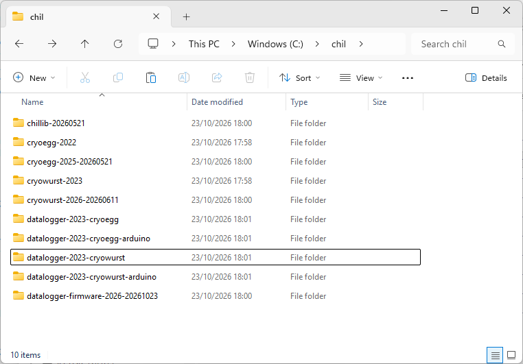
Fig. 1 Repositories copied from childev to the local C:/chil folder.#
Install Python 3.14#
Run the installer python-3.14.5-amd64.exe located in childev/installers/.
Select Customize installation and “Add python.exe to PATH” before proceeding.
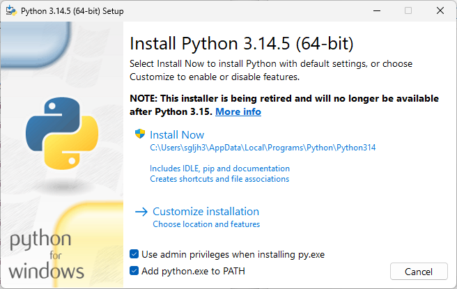
Fig. 2 Initialise a custom installation of Python 3.14.#
On the Optional Features menu, ensure all options are selected except for “for all users”.
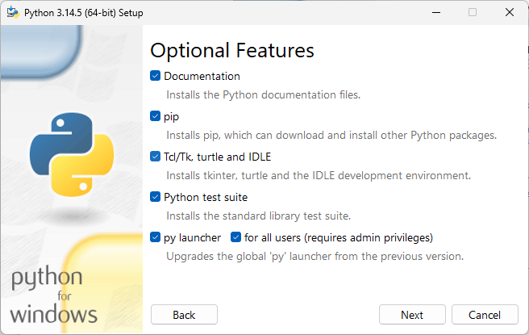
Fig. 3 Optional installation features for Python 3.14.#
On the Advanced Options menu:
Install Python 3.14 for all users [✓]
Associated files with Python [✓]
Create shorcuts for installed applications [✓]
Add Python to environment variables [✓]
Modify the install location to C:/python/python314/.
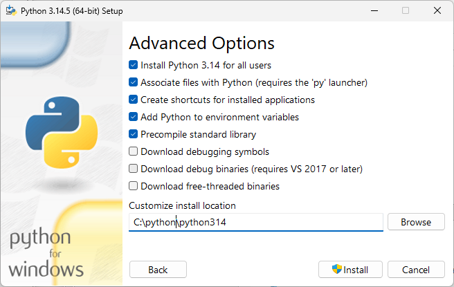
Fig. 4 Advanced options for Python 3.14 install.#
Press install and wait for the installation to complete.
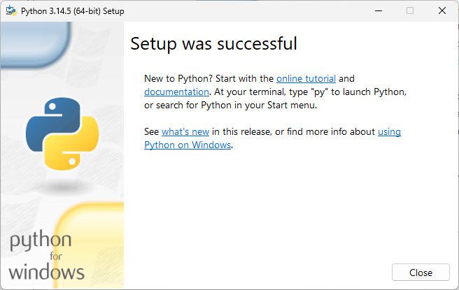
Fig. 5 Successful installation of Python 3.14.#
Restart your PC.
Install cryodecoder#
Open a terminal (command prompt) window and navigate to the folder where you have extracted the repositories.
Navigate to the repository folder, create a virtual environment and activate it using the steps below:
cd C:/chil
python -m venv .env
.\.env\Scripts\activate
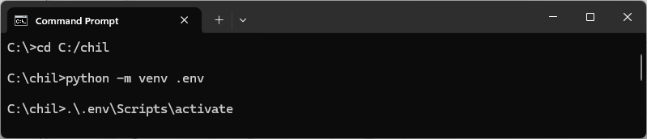
Fig. 6 Create and activate virtual environment.#
Once the virtual environment is activated, install cryodecoder in editable mode using the following command:
python -m pip install --no-index --find-links=C:\tools\childev\wheels -e ./cryodecoder-2.1.0-beta
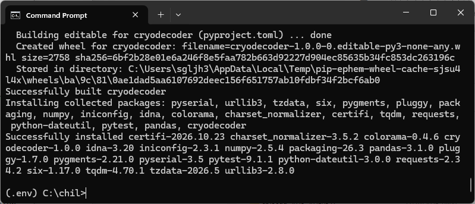
Fig. 7 Successful install of cryodecoder (and requirements) in editable mode.#
You can validate that cryodecoder has installed by running the
cryodecoder --helpcommand.
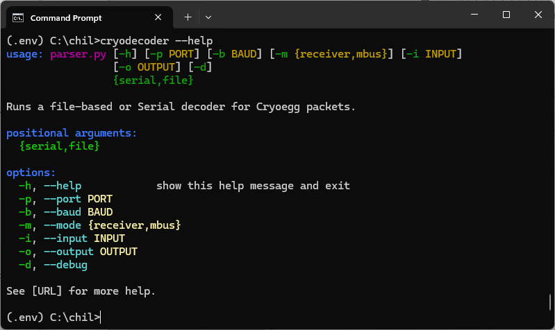
Fig. 8 Help message from cryodecoder, indicating a successful install.#
Install VS Code#
Located in childev/installers, run VSCodeUserSetup-x64-1.121.0.exe.
Select “I accept the agreement” on the following splash screen and install the software to the default location.
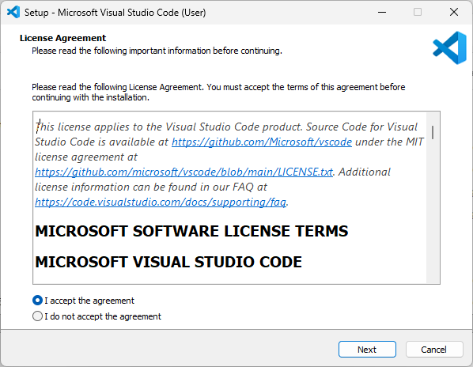
Fig. 9 Accept license agreement for VS Code.#
Use the default installation folder and press Next.
Use the default start menu folder and press Next.
Ensure that “Add to PATH” is selected and optionally select to create a desktop icon.
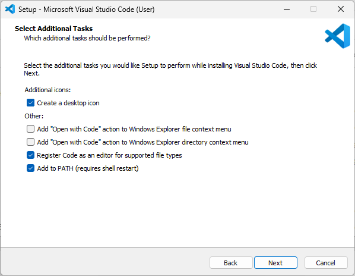
Fig. 10 Set PATH option for VS Code.#
Press Install and wait for the installation to complete.
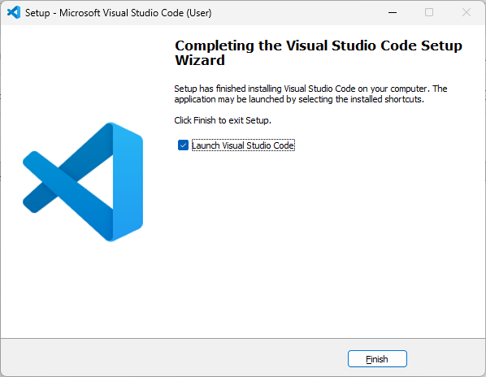
Fig. 11 Launch VS Code once installation has finished.#
Once the installation has completed, load VS Code and proceed to the next step of installing PlatformIO.
Install PlatformIO#
Open VS Code and open the “Extensions” menu (View > Extensions from the top menu bar).
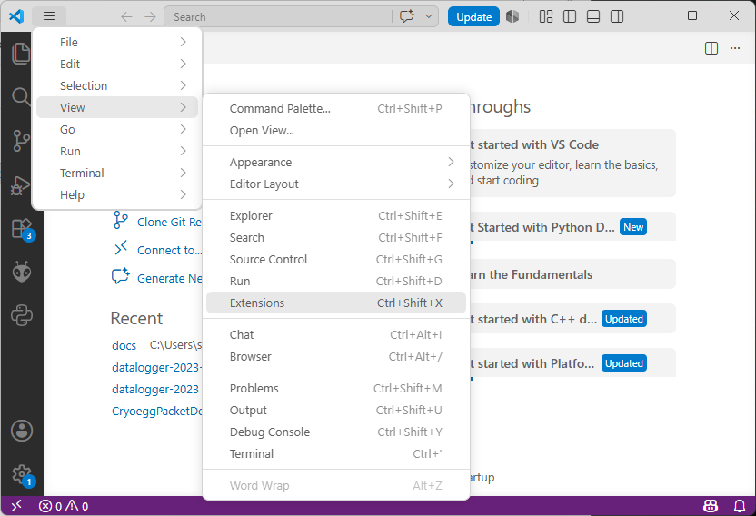
Fig. 12 Open Extensions menu in VS Code.#
Select the Install from VSIX option from the three dots (…) menu at the top of the extensions screen.
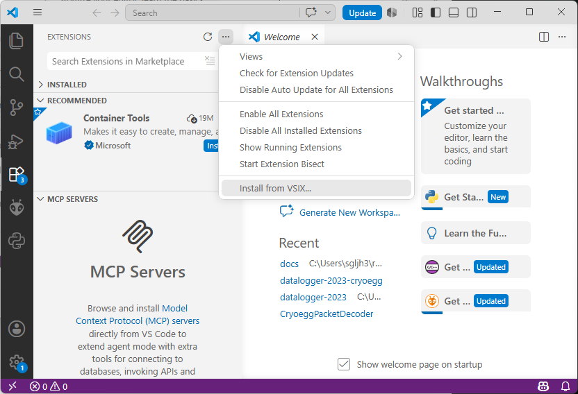
Fig. 13 Install extesions from VSIX files in VS Code.#
Navgiate to the childev/vscode_extensions folder and install the following extensions:
VS Code cpptools: ms-vscode.cpptools-1.32.2-win32-x64.vsix
VS Code cpptools extension: ms-vscode.cpptools-extension-pack-1.5.1.vsix
VS Code cpp-devtools: ms-vscode.cpp-devtools-0.5.13.vsix
VS Code cmake-tools: ms-vscode.cmake-tools-1.23.52.vsix
PlatformIO: platformio.platformio-ide-3.3.4-win32-x64.vsix
Extract the contents of .platformio.zip folder from childev/installers to C:/Users/[username]/.platformio - make sure you don’t end up with a nested folder (i.e. .platformio/.platformio/…). This is a large ZIP archive so might take some time!
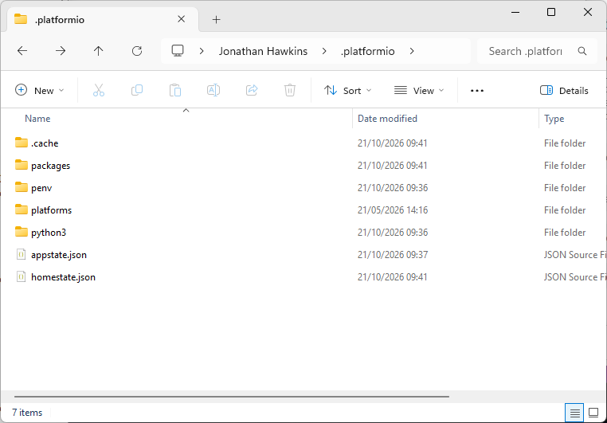
Fig. 14 Copy the contents of the .platformio folder to match this figure.#
Restart your PC.
Install datalogger firmware#
In the example below, the 2026 firmware is setup (datalogger-firmware-2026-*). If you are using the older (2023) version of the datalogger, complete the same steps for datalogger-2023-cryoegg or datalogger-2023-cryowurst.
Note
Alternative versions of the datalogger firmware for Arduino IDE are available in the datalogger-2023-*-arduino folders. Follow the instructions here.
Extract the contents of the datalogger firmware firmware/datalogger-firmware-2026-* to C:/chil/datalogger-firmware-2026-*. Double check that you haven’t nested any folders - firmware folder should contain the
data/,lib/andsrc/folders.Extract the contents of firmware/chillib-* library to C:/chil/chillib-*. As above, check to avoid nested folders.
Open VS Code and open the C:/chil/datalogger-2023 folder. If prompted to trust the authors of the repository, confirm that you trust us!
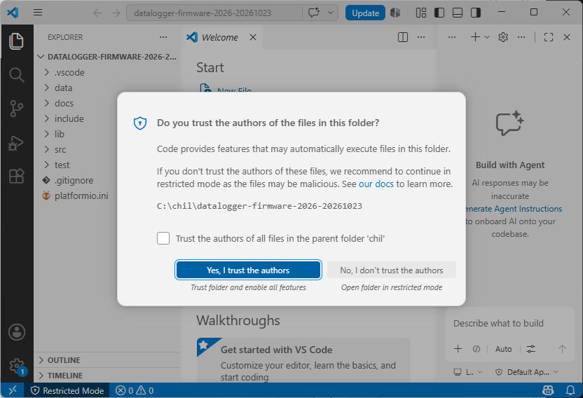
Fig. 15 Trust the repository before being able to proceed.#
Open
platform.iniand replacesymlink://../chillibwith the path to the chillib folder you just extracted (i.e.C:/chil/chillib-*).Wait for the library manager to finish installing the project libraries.
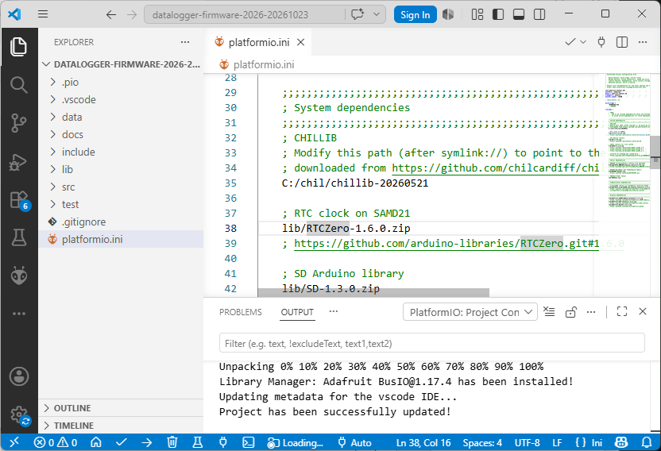
Fig. 16 Update chillib location and allow PlatformIO to install libraries.#
Press CTRL+SHIFT+P, type in PlatformIO: Build to the text box at the top of the screen and press enter. This will compile the Datalogger firmware. An output terminal should appear at the bottom of the screen and show a [SUCCESS] message - this might take a while the first time you run the build command.
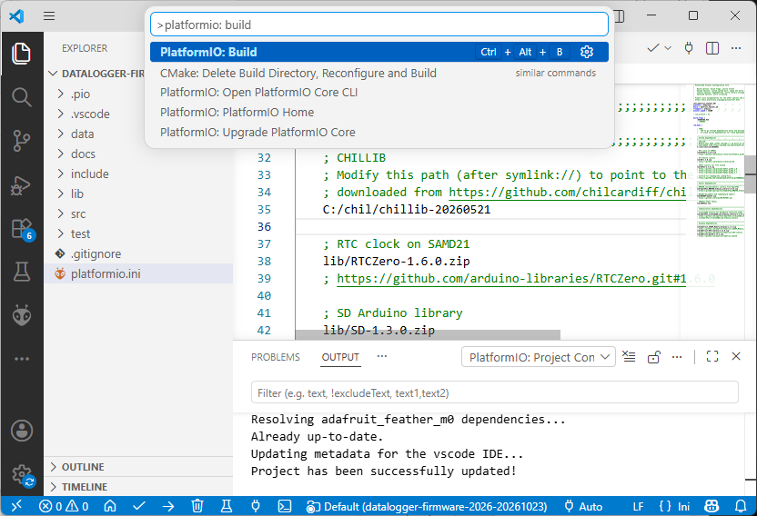
Fig. 17 Build the project to verify all dependencies have been installed.#
If you have a datalogger board (or just the Arduino Feather M0) to hand, plug it into the USB connection of the laptop, press CTRL+SHIFT+P and type PlatformIO: Upload. Press enter and the firmware should be uploaded to the datalogger.
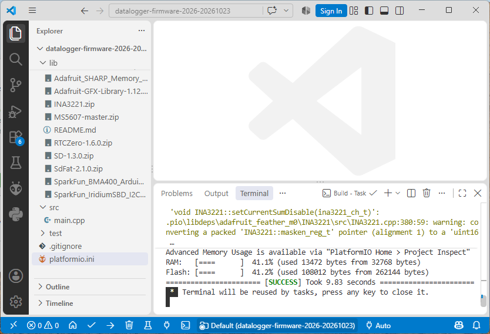
Fig. 18 Success message on completion of a successful build.#
Install STM32CubeIDE#
You will need to use STM32CubeIDE to program CHIL instruments which use the STM32L4 series of microcontrollers - this includes Cryoeggs, Cryowurst, Cryobeans, SmartSnowStake, etc.
Unzip the installer located with st-stm32cubeide_2.1.1_28236_20260312_0043_x86_64.exe.zip to a location of your choice.
Run the installer file (st-stm32cubeide_2.1.1_28236_20260312_0043_x86_64.exe). Press Next > when it loads to begin installation.
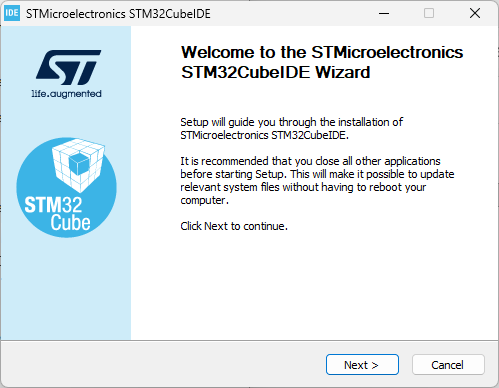
Fig. 19 Start the STM32CubeIDE installation.#
Agree to the license and press Next >.
Use the default installation folder and press Next >.
When prompted to choose components to install, ensure that both SEGGER J-Link drivers and ST-LINK drivers are selected and press Install > to begin.
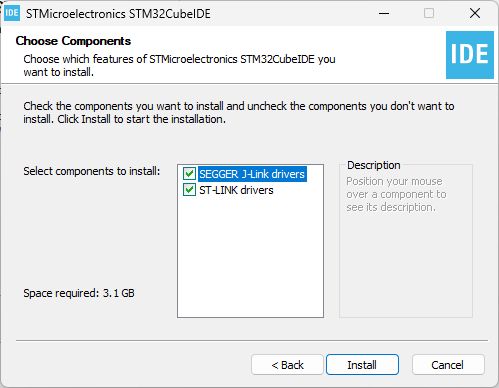
Fig. 20 Ensure that ST-LINK and SEGGER J-Link drivers are selected to be installed.#
Launch the STM32CubeIDE software.
When prompted to select a directory as a workspace update the filepath to C:/Users/<username>/STM32CubeIDE/chil and select Launch.
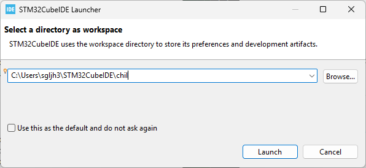
Fig. 21 Set the path for the STM32CubeIDE workspace.#
When STM32CubeIDE has loaded, you’re ready to setup the development environment for a CHIL instrument. Close the Information Center view to reveal the Project Explorer.
Setup STM32CubeIDE environment#
Within the chil workspace you have just created in STM32CubeIDE (see previous step!), we can import the firmware libraries for CHIL instrumentation.
Add chillib library#
Select File > Import…. A dialog box will open. Choose the option General > Existing Projects into Workspace and press Next >.
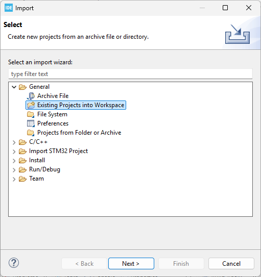
Fig. 22 Import chillib as an existing project.#
Browse for the
chillib-*folder inC:/chiland select it as the root directory. If succesful, you should see a project namedchillibin the Projects window. Press Finish.
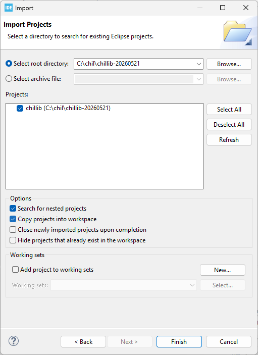
Fig. 23 Select the chillib project.#
Add instrument firmware#
Repeat the steps above for the following folders in C:/chil (or wherever you copied the repositories to).
cryoegg-2025-*cryoegg-2022(archive version of the Cryoegg firmware for pre-2026 hardware).cryowurst-2026-*cryowurst-2023(archive version of the Cryowurst firmware for 2023 hardware).
Note
The cryoegg-2025-* folder contains an additional project named test_IMU. You can unselect this project before pressing Finish to avoid importing it into the workspace.
When finished, the project explorer in STM32CubeIDE should look like Figure 24.
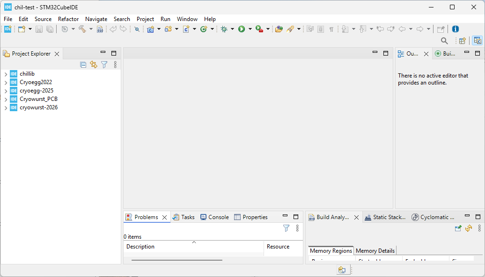
Fig. 24 All STM32 projects imported into STM32CubeIDE.#
Third-party software and instrument firmware#
Third-party software#
The various third-party software tools that make up the development and deployment environment for CHIL isntruments and dataloggers are listed below.
Name |
Used for |
Version |
URL |
|---|---|---|---|
VS Code |
Text editor and development environment CHIL datalogger firmware. |
v1.121.0 |
|
Python |
Programming environment for CHIL packet decoding software. |
v3.14.0+ |
|
STM32CubeIDE |
STM32 microcontroller development environment for instrument firmware. |
v2.1.1 |
|
Radiocrafts RCTools |
Programming radio module IDs and debugging. |
v1.98 |
Firmware and software#
GitHub is used to store and provide version control for CHIL instrument and datalogger firmware, as the cryodecoder Python library which is used to decode packets.
Library name |
Description |
Release |
URL |
|---|---|---|---|
chillib |
Shared firmware library |
v20260521 |
|
cryoegg-2025 |
Cryoegg firmware and design files |
v20260521 |
|
cryowurst-2026 |
Cryowurst firmware and design files |
N/A |
|
cryodecoder |
Python package and CLI interface to decode CHIL packets |
N/A |